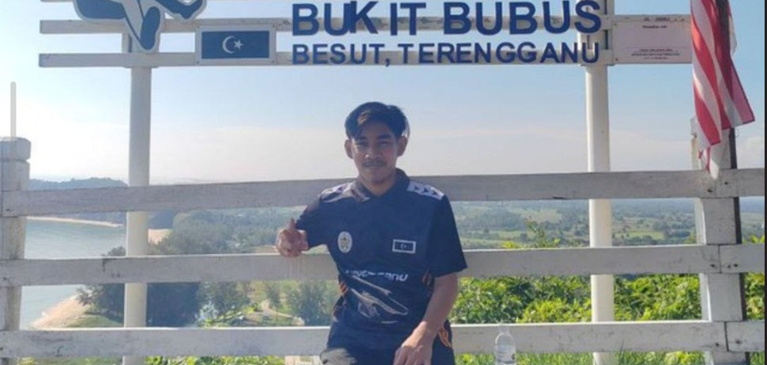
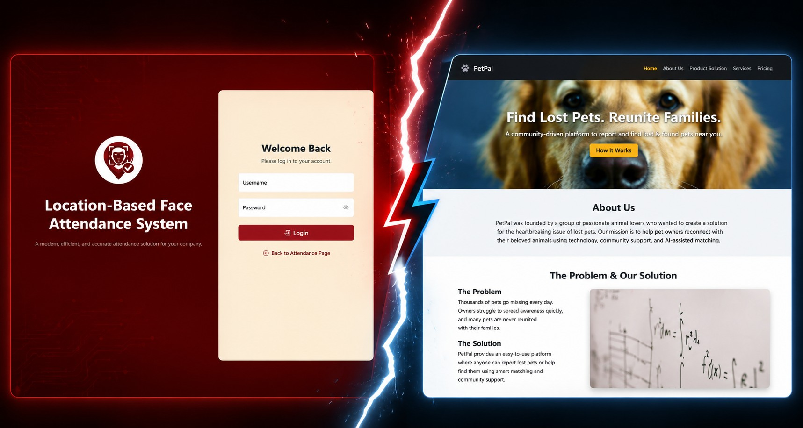

About Me

Hello! My name is Muhammad Nur Fakhri Bin Ampandi, and I am currently pursuing a Bachelor of Software Development at Universiti Sultan Zainal Abidin (UniSZA).
I have a strong interest in web development, information security, and software engineering. Throughout my studies, I have worked on various academic projects that enhanced my programming, problem-solving, and system development skills.
This portfolio highlights my projects, learning experiences, and technical knowledge as I continue my journey toward becoming a professional software developer.
Projects

GeoHadir - Location Based Face Attendance System
A Final Year Project that combines facial recognition, geolocation verification, and live detection technology to automate attendance tracking while improving security and accuracy.
PetPal - Lost & Found Pet System
A web-based system developed using CodeIgniter 4 that helps users report and locate lost pets efficiently.
Food Delivery Route Planning
An Algorithm Design and Analysis project utilizing Dijkstra and Greedy algorithms to optimize food delivery routes.
Blog
My Journey in Software Development
My journey in Software Development began with learning programming fundamentals and gradually expanded into web development, database management, and software engineering practices. Throughout my studies, I have explored various technologies and gained practical experience through coursework and academic projects.
Each project has contributed to my growth as a developer by improving my programming, analytical thinking, and problem-solving abilities. These experiences have strengthened my passion for building innovative software solutions and continuously learning new technologies.
Developing GeoHadir (FYP)
GeoHadir is my Final Year Project that focuses on developing a Location-Based Face Attendance System with Live Detection technology. The system combines facial recognition, geolocation verification, and liveness detection to provide a secure and automated attendance management solution.
During the development process, I gained valuable experience in system analysis, database design, user interface development, and software testing. One of the major challenges was ensuring accurate facial recognition while preventing spoofing attempts through live detection mechanisms.
Algorithm Design and Problem Solving
Studying algorithm design has helped me understand how to solve complex problems efficiently and systematically. Through academic projects, I have worked with algorithms such as Dijkstra’s Algorithm and Greedy Algorithm to develop optimized solutions for real-world scenarios.
Understanding algorithm efficiency, optimization techniques, and computational thinking has strengthened my ability to design scalable systems and make effective technical decisions during software development.
Contact
Name: Muhammad Nur Fakhri Bin Ampandi
Programme: Bachelor of Software Development
University: Universiti Sultan Zainal Abidin (UniSZA)
GitHub: github.com/Animuzr